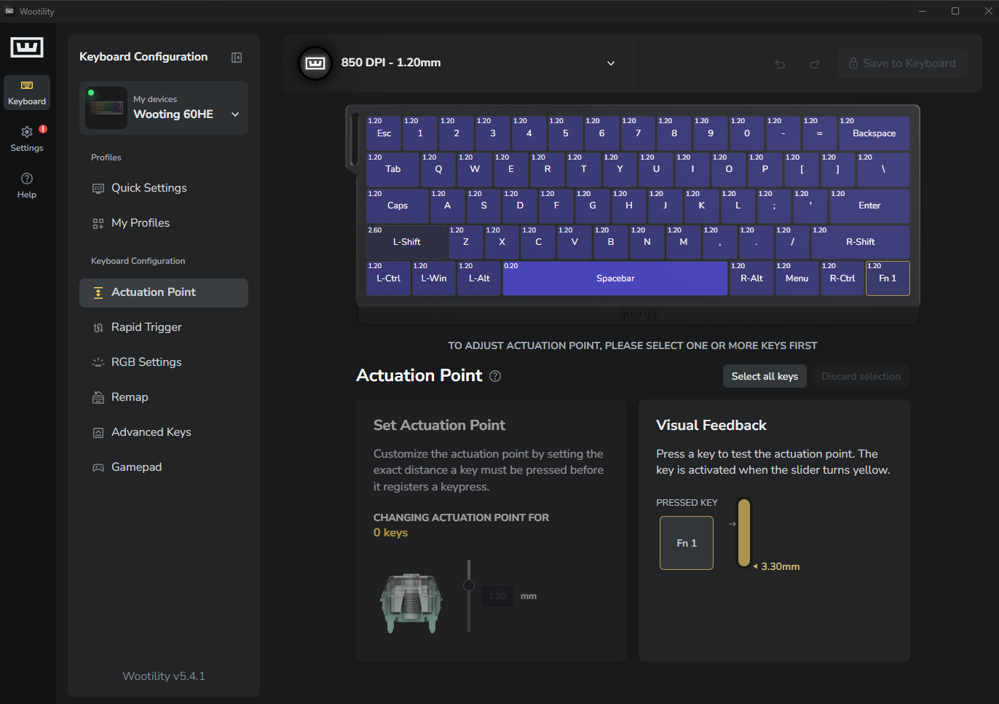
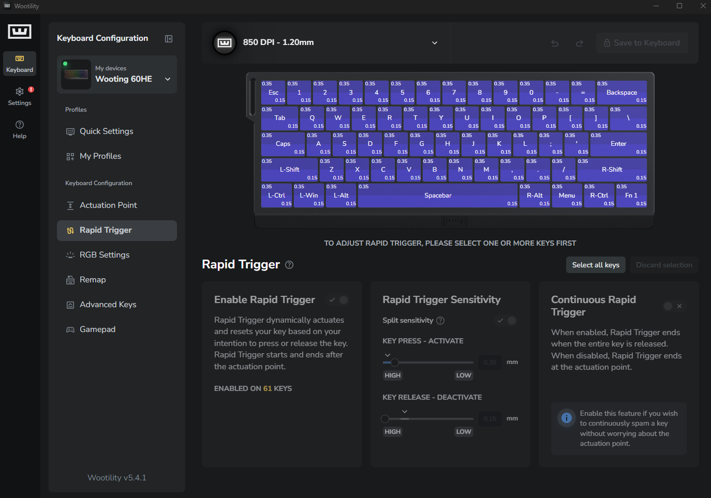
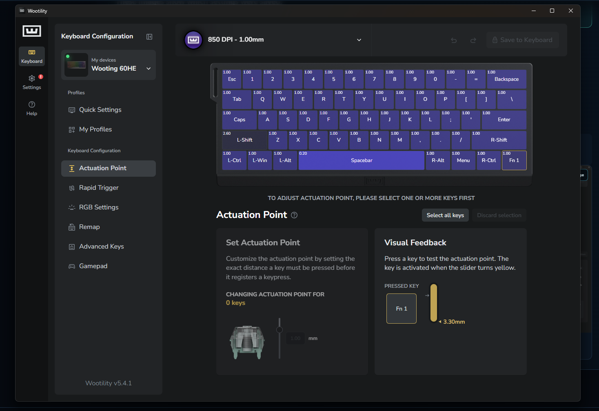
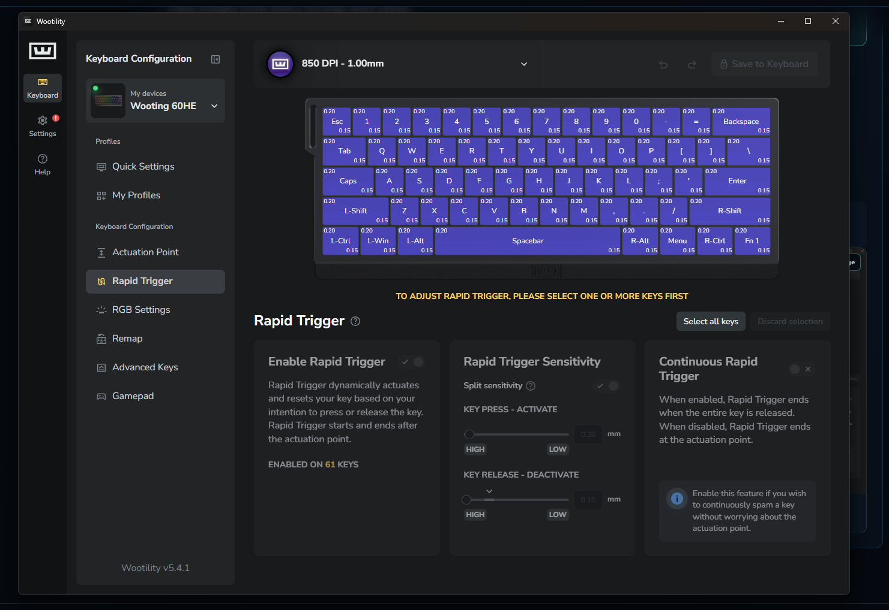
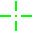

Earlier full-map result: 0.35 mm RT A and 0.15 mm RT D. This proved the larger first-press baseline could be tuned into a clean personal result.
Saved checkpoints · not deleted mistakes
Hanz's Archive Vault
These are prior keyboard, Rapid Trigger, game, sensitivity, and crosshair configurations from FreeStyle GunZ testing. They show how the current profile developed and preserve the known bases I can return to. They are not Steam GunZ results.
A stable base makes improvement recoverable.
It is okay for the numbers to change when the test exposes a repeated problem. I keep the last working configuration, change one value for a specific reason, and compare the result over time. A newer profile does not erase what the earlier checkpoint proved.
Consistency refinement: 0.20 mm RT A and 0.15 mm RT D. It worked, but high-level games and longer sessions still demanded more effort near the top of the key.
Current FreeStyle GunZ result: 0.15 mm RT A and 0.25 mm RT D. In my testing, it preserved the response I wanted while supporting sustained pace with less effort.
Recorded progression: 1.20 → 1.00 → 0.60 mm actuation. Each value is a personal checkpoint tied to a different stage of testing, not a recommendation that every player should keep lowering actuation.
1.20 mm checkpoint
This October 2026 checkpoint preceded the 1.00 and 0.60 mm refinements.
Actuation1.20 mm
RT A · Activate0.35 mm
RT D · Deactivate0.15 mm


1.00 mm checkpoint
This profile was saved before the October 24 refinement to 0.60 mm actuation.
Actuation1.00 mm
RT A · Activate0.20 mm
RT D · Deactivate0.15 mm


Earlier game baseline
Resolution1280 × 960
Field of view70
Camera distance10
Mouse DPI850
GunZ sensitivity3336
CrosshairFG size 1.30 · #00FF00
This is the earlier game baseline previously shown in the Research Notebook. It is retained here so later keyboard results are not separated from the game conditions used at the time.
Light-green 32 × 32 PNG

The current FreeStyle GunZ capture uses a different Custom 1 crosshair presentation at size 1.00 and #FFFF00. This prior file remains available as part of the preserved configuration history.
Download archived crosshair